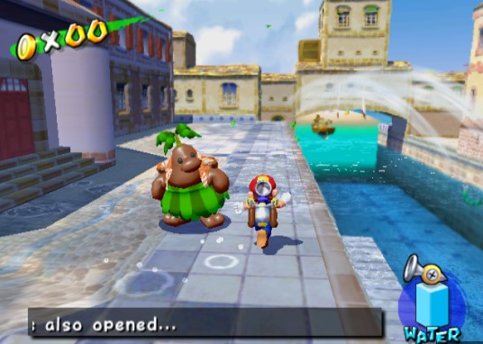
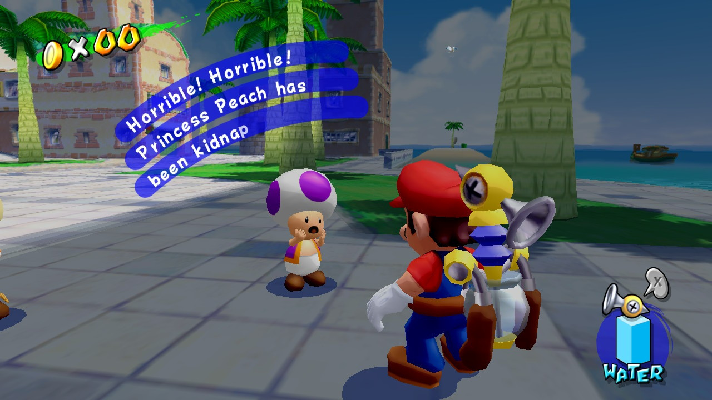

Plot Summary |
|
Super Mario Sunshine is a fun-filled adventure that takes place on the tropical island of Isle Delfino. |
|
Mario and his pals are off on a vacation when they discover that the island has been covered in graffiti by the mischievous Bowser Jr. To make matters worse, a mysterious imposter is causing trouble and has framed Mario for the mess! |
|
With the help of a magical water-spraying backpack called FLUDD, Mario sets out to clean up the island and clear his name. Along the way, he meets a colorful cast of characters, including a group of Piantas who help him navigate the island, and a sassy Princess Peach, who has been kidnapped by Bowser Jr. yet again. |
|   |
|
Mario must use his platforming skills and FLUDD's water jets to clean up graffiti, defeat Bowser Jr.'s henchmen, and collect Shine Sprites, which are the source of the island's power. Eventually, Mario faces off against Bowser Jr. and his father, Bowser, in an epic battle to save Isle Delfino and rescue Princess Peach. |
|
Will Mario be able to save the day and restore peace to the island? Only time will tell in this exciting adventure filled with sunshine, water, and lots of platforming fun! |